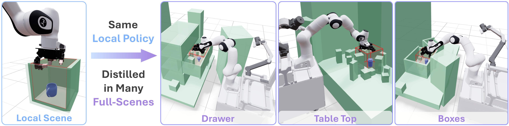

COWBOY A Scalable Sim-to-Real Framework for Learning Contextual Whole-Body Manipulation
Submission to CoRL 2026 Paper ID: 715
Abstract
Mobile manipulators must adapt not only to objects, but also to the spatial context in which they appear: where to position the base, how to manipulate, and where to look while navigating surrounding scene geometry. To address this, we present COWBOY, a scalable sim-to-real framework for learning such contextual whole-body manipulation. On whole-body dexterous grasping, COWBOY transfers zero-shot to hundreds of objects and diverse in-the-wild scenes, spanning cluttered tabletops, shelves, drawers, and other unstructured settings.
Rather than learning scene adaptation directly with RL in simulation, a vectorized environment-aware whole-body controller (WBC) handles reaching in thousands of scenes by coordinating base-arm motion, collision avoidance, and active vision. Then, local RL experts are trained in local scenes for object interaction and can be reused across thousands of full-scene layouts. We distill these composed WBC--RL teachers into a single vision policy that controls the mobile base, arm, dexterous hand, and actuated camera from point-cloud observations. The resulting policy exhibits contextual whole-body behavior, automatically adapting base placement, camera viewpoint, arm trajectory, and grasp strategy to observed scene and object geometry.
All videos below show the same policy in different scenarios (1x Speed)
COWBOY enables sim-to-real mobile manipulation across diverse objects and environments.
A single vision-based policy coordinates all 32 degrees of freedom:
- Mobile base:3 DOF
- Arm:7 DOF
- Dexterous hand:16 DOF
- Actuated neck for active vision:6 DOF
The policy enables the robot to grasp hundreds of objects across diverse in-the-wild scenes.
Click to See Full EvaluationsCOWBOY policies exhibit contextual manipulation.
Observing only the scene geometry, object geometry, and target object, the policy automatically adapts its behavior accordingly:
- Selects the appropriate grasp and approach strategy
- Avoids collisions with the surrounding scene
- Maintains gaze on the target object through active neck control
All without explicit conditioning on scene type, base pose, camera motion, or grasp strategy.
Motion depends on Object Geometry
Same Scene, Different Object → Different Grasps
Motion also depends on Environment Geometry
Same Object, Different Scenes → Different Grasps
COWBOY policies coordinate the whole body.
Active Vision
Base Motion
Real World Evaluations.
COWBOY framework has three components:
1. Vectorized Environment-Aware Whole-Body Controller
We introduce a vectorized whole-body controller (WBC) capable of generating environment aware whole-body motion across thousands of simulated environments on a single GPU.
End-Effector Reaching
Camera Gaze Control
Self Collision Avoidance
Environment Collision Avoidance
2. Contact-Rich Local RL Policies
Our WBC handles collision-free approach to the target object. This allows us to train local RL policies that only focus on object interactions, simplifying the learning task.
Top Down Grasp
Side Grasp
Constrained Side Grasp
3. Local-to-Full-Scenes Multi-Teacher Distillation
We embed the local scenes within diverse full scenes, where the WBC first brings the end effector near the object. The local policy can then complete the task, enabling a policy trained in one local scene to generate expert motion across diverse full-scenes.
